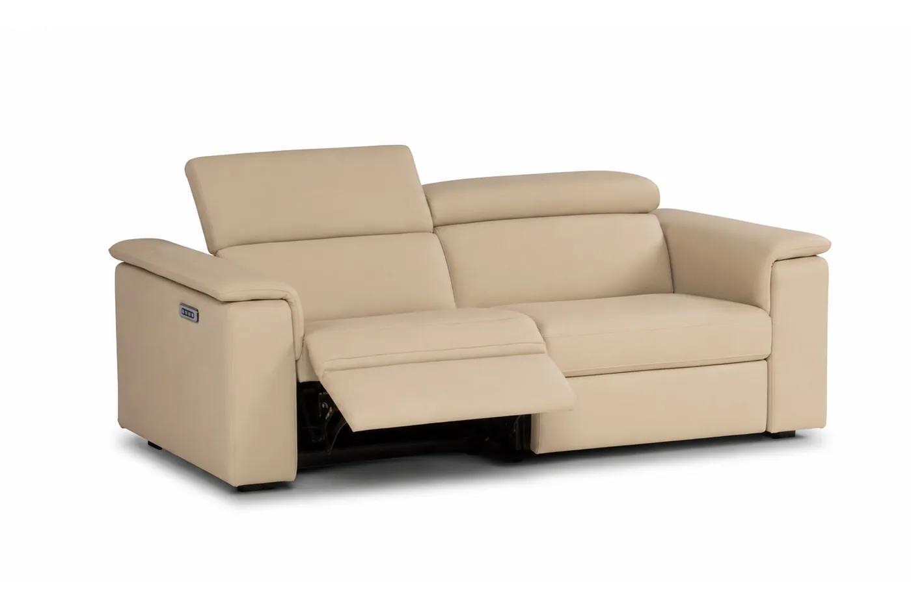

Salon
Canapés relax électriques.
Comparez les modèles Max Divani et Nicoletti, leurs dimensions et leurs réglages. Au magasin, essayez les mécanismes des salons exposés avant de choisir.
La sélection
Quel canapé relax pour votre quotidien ?
-

À deux
Deux places, deux façons de se détendre.
Sur les places relax Nicoletti équipées, chacun règle sa position. Selon la version, la têtière se relève pour lire et un soutien lombaire réglable complète le confort.
-

En famille
Trois places, deux places ou fauteuil : composez votre salon.
Un ensemble assorti, avec des assises sur ressorts ensachés pour les modèles présentés. Choisissez le relax électrique en option sur les places que vous utilisez le plus.
-

Dans un grand séjour
Le confort relax, même en angle.
Une composition d’angle ou avec chaise longue peut intégrer des places relax. Selon le modèle, les appuie-têtes réglables permettent d’adapter sa position.


Vos questions
Avant de choisir.
Peut-on essayer un relax électrique au magasin ?
Oui. Des salons relax sont exposés au magasin : comparez leurs positions et leur confort, sans rendez-vous. La composition exposée change au fil des arrivages.
Toutes les places d’un canapé relax sont-elles motorisées ?
Pas forcément : un trois places n’a pas toujours trois relax. Chaque fiche précise les versions et les compositions proposées par le fabricant.
Quelle place faut-il prévoir devant le canapé ?
La profondeur varie selon le modèle et la position du relax. Consultez les dimensions de la fiche et apportez les mesures de votre pièce au magasin.
Voir aussi
D’autres façons de chercher.
Venez essayer nos salons.
Notre équipe vous aide à choisir la composition, le revêtement et la version qui vous conviennent. Parking facile d’accès, avec ou sans rendez-vous.
- Lundi
- 13h30 – 18h30
- Mardi au samedi
- 10h30 – 18h30
- Dimanche
- Fermé
- Téléphone
- 064 46 07 72
- Livraison
- Par nos soins, dans le Hainaut (Binche, La Louvière, Mons, Charleroi…) et la province de Namur
Ailleurs en Belgique, dont Bruxelles : sur demande.